11th November ~ 17th November
Kathmandu (1,400m)
Preface: Due to inclement weather over in Lukla, our flight was delayed by 4 days, most of which we spent in Boudhanath (temple area), people watching.
Friday 11th -Saturday 12th November 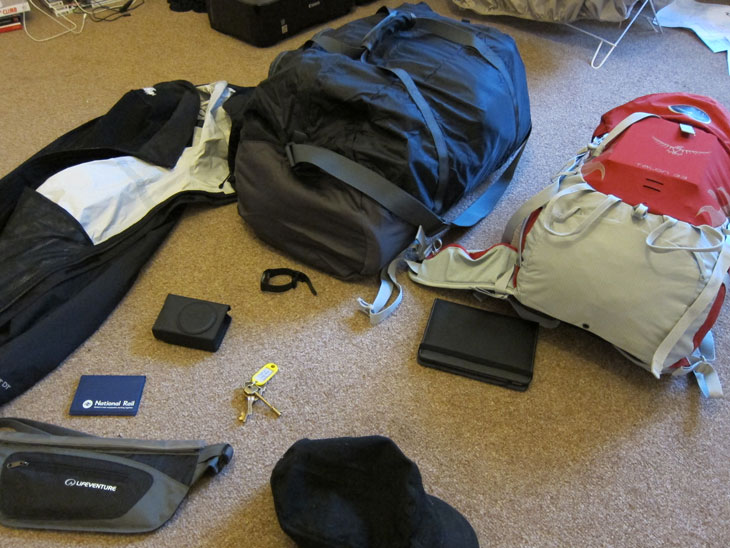
Having packed all my gear, I enthusiastically trekked to London Heathrow looking every bit like a tourist. At customs I nearly lost my moneybelt and all my money when it failed to emerge from the baggage scanner! There must’ve been four hundred pounds of various currencies in there … That taught me very early on to keep an eye on my most important possessions.
The flights were included with the package I had booked through the Adventure Company and I wasn’t too impressed with my assigned airline: Jet Air. I was a tad sceptical - I’d never heard of Jet Air and was expecting a crap Indian version of Jet2. Turns out I had nothing to worry about - this was a very luxurious flight (for someone who generally doesn’t fly much) which included two meals (dinner and breakfast) and in-flight entertainment (I watched Harry Potter: The Deathly Hallows and Captain America - both rather new films at the time). I noticed a few others watching Touching The Void (a mountain climbing disaster film), which kinda amused me. 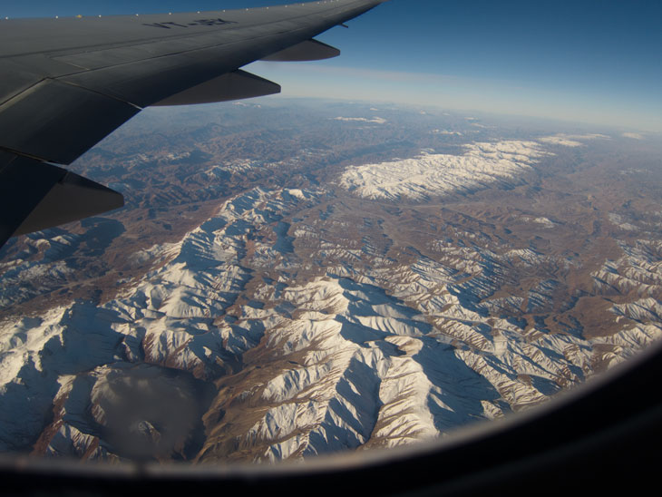
I was sat next to the window and I have to say, the scenery was spectacular - watching the rolling mountains and plains and villages slowly morph into towns which grew into sprawling cities over the landscape. Unfortunately, I couldn’t take any photos to do this view justice, but it was quite beautiful.
At this point, I was still travelling by myself - I’d not seen anyone from the Adventure Company yet, and wasn’t due to till I arrived in Kathmandu. None of us realised at the time, but we were all sat together on the plane. The truth did slowly dawn on us however, as we noticed we all had the same Adventure Co. luggage tags. I was sat with Sonja and Conan on our flight to Delhi.
Delhi airport was an interesting experience - the place was very new and spacious, but also quite empty. There was an annoying amount of queueing and bag checking even though we were just trying to make a connection to Kathmandu.
Our adjoining flight wasn’t quite as nice as before and I was sat with Claire (who was with us some of the way on a slightly separate trek) and Alex (who was part of my group) for this flight. Looking out the window, the beautiful landscapes turned into some horrible metropolis of smog and filth … little did I know that Kathmandu is actually one of the most polluted cities in the world. Upon arrival I queued some more (stood with Rob, who was with Claire’s group), filled in paper work and pay some 10USD for a visa.
There was a comedic moment where a monk had got off the same plane as us but was at a queue a bit further down (for Nepalese nationals, I guess). Despite his queue being about five people long (and ours being about thirty), we still managed to get to the front before him. He was pretty irate by the time he got through - seems airports can test even a monk’s patience …
Having got all that sorted, I grabbed my luggage and went out into Kathmandu! As a newbie trekker and rich and spoilt westerner, here I learnt a very valuable lesson: everybody wants your money. As soon as I stepped out the doors, I was swarmed by taxi drivers offering to drive me to the city. No big deal - I was wearing a cap and looked Asian enough that I didn’t attract them all to me. A quick scan about and I saw the Adventure Company rep, who ticked me off a list. One of them told me to pass my bag to the porter who I followed to the minibus. As soon as he dumped my bag in the back:
“You pay him tip.”
What? Shit.
“You give ten. Five each.”
Ten what? Dollars?
“Ten pounds.”
So, like an idiot, I gave the guy £10 for carrying my bag 20m across the carpark for me (which I had already carried across London by myself). He must’ve thought it was Christmas. Ten pounds is about equivalent to a hundred pounds (two expensive meals) in Nepal. I got into the minibus and my team mates were laughing their heads off. They’d watched me get well and truly duped. This annoyed me somewhat and left me suspicious and cynical of the Nepalese for the rest of the trip.
Then Rob followed me in moments later and told us he’d given them £20. I didn’t feel quite so dumb after that, haha. Poor Rob. Those guys weren’t even with us - they were just hanging around our rep like vultures, knowing we’d think they were from the Adventure Co.
With our minibus loaded, I met the rest of the group (five others, plus three in the Gokyo Lakes trek group) and we set off to the hotel. 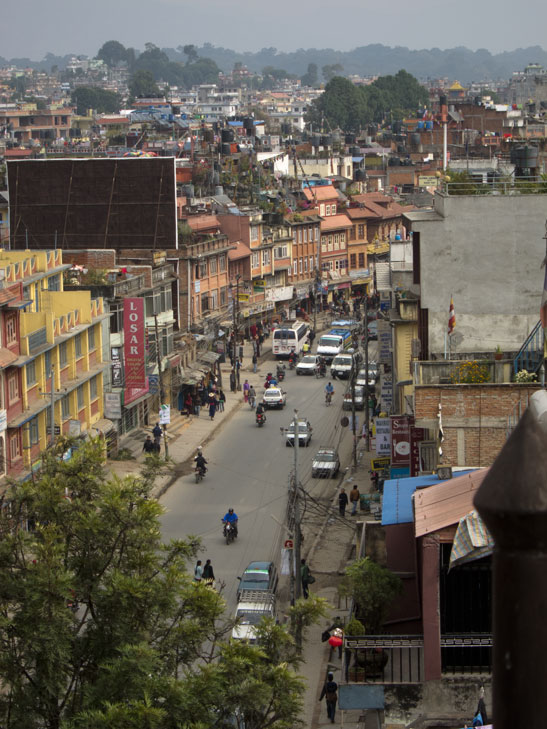
As a large proportion of the Nepalese are Hindu (about 80%, according to wiki) the cows are sacred and left to wander the city, living off the refuse. I wonder if it wouldn’t be more humane to round them up and keep them in the countryside, rather than put up with the human generated dirt and pollution. For some reason, the dog population also runs free and unchecked. Typically unafraid of people, they sleep undisturbed all over the roads and pavements. Most of these animals look horribly diseased - missing patches of fur due to mange or some other skin condition. Enough to make you think more than twice about stroking them.I have to admit, the journey was an eye-opener.
I knew almost nothing of Kathmandu prior to arrival, and I had not expected the place to be such a dump … That’s sounds horribly disrespectful, but I was pretty shocked with the amount of litter everywhere. The roads are chaotically clogged with all sorts of smog-spluttering vehicles and the rivers were overflowing all down the banks with rubbish.
Dogs and cows, pollution and money-grubbing locals would be with us the whole time till we left for the mountains. 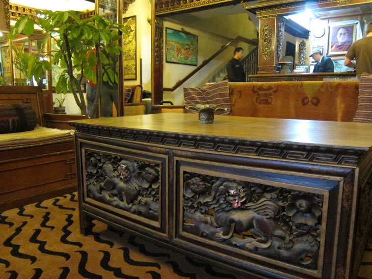
So after an interesting ride through the city, we’d arrived at our hotel and met Hari, our guide for the trek. 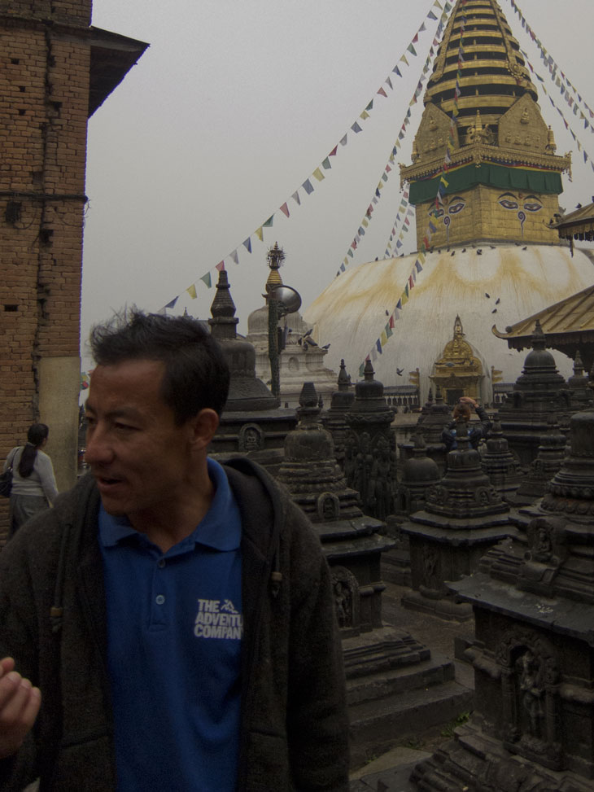
As our group were made up of two couples, me and Sarah, I got a twin room all to myself. Seems like Western sensibilities don’t allow boys and girls to share, not that I would’ve minded … This sleeping arrangement was to hold the whole way through our trip for various lodges and teahouses and would come in handy later on when I was in need of those spare extra blankets! We arrived at the Hotel Tibet where we were to stay while we did the tourist thing in the city. All told, the hotel was very nice - the rooms were en suite, and had TVs.
As I would read later on in more than a few books, Hotel Tibet was the first stop for many an expedition to Mount Everest. To be honest, I feel quite privileged and honoured to have stayed there (despite y’know, the occasional powercut).
We all sat down later in the evening with Hari to go through the trip itinerary and equipment checklist. He explained what our trip would consist of and what to expect and answered our questions. Mostly we were puzzled about what to do for Nepalese currency. Turns out there’re money exchange shops everywhere, and even our hotel changed money. Generally, you pay for everything in Nepalese Rupees.
Sunday 13th November
Today was to be spent doing the touristy thing and stocking up on any supplies and equipment we might need (down jackets and trekking poles mostly).
Today, we mostly went around by minibus, criss-crossing the city a few times. I was still absolutely amazed by the insane traffic and laxity of road safety (e.g. up until recently, it was actually illegal for motorbike passengers to wear helmets but despite that law no longer being in effect, people still don’t bother). The honking of horns echoes throughout the city, not in the aggressive manner Westerners tend to use their horns, but more as a defensive gesture, to let others know they’re there. 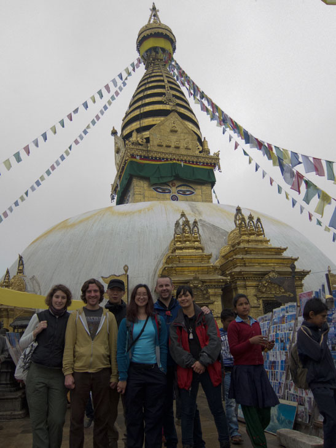
Swayambhunath (Monkey Temple) 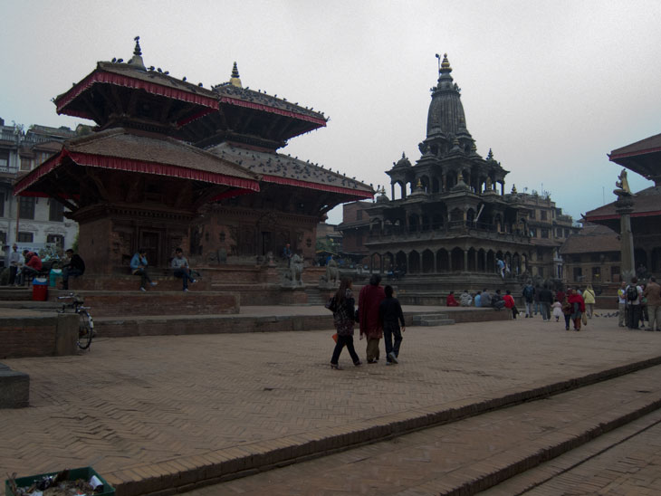
Durbar Square 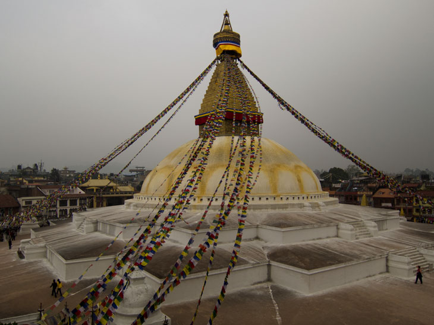
Boudhanath 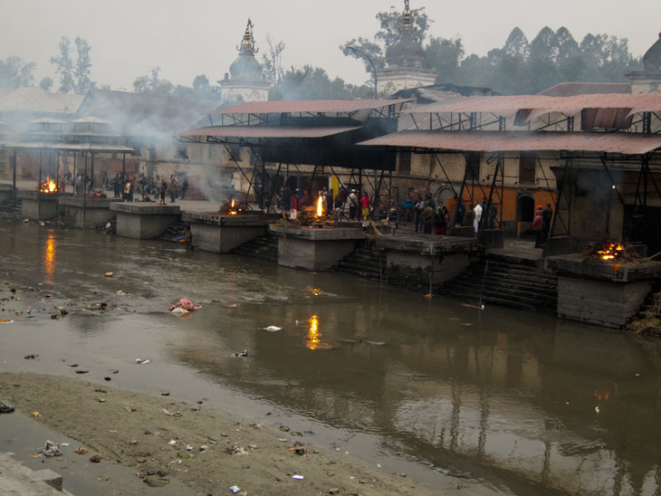
Pashupatinath 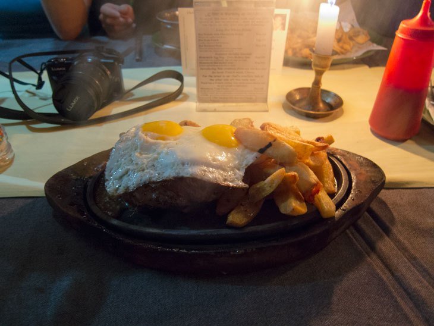
Went to Thamel for last minute shopping. We all bought some cheapo souvenirs, topped up on meds and supplies, and hired any equipment we needed. We had dinner at Kilroy’s.
Monday 14th November
Was supposed to fly out to Lukla today (woke up at 5, left after coffee), but spent the whole day at Kathmandu airport waiting for possibility of flight. After 8 hours, came back at 2 and checked into new hotel: Hotel Tibet International - amazingly nice hotel.
Tuesday 15th November
No flights again. Went out around Sundhara Square and Asan Tole bazaar
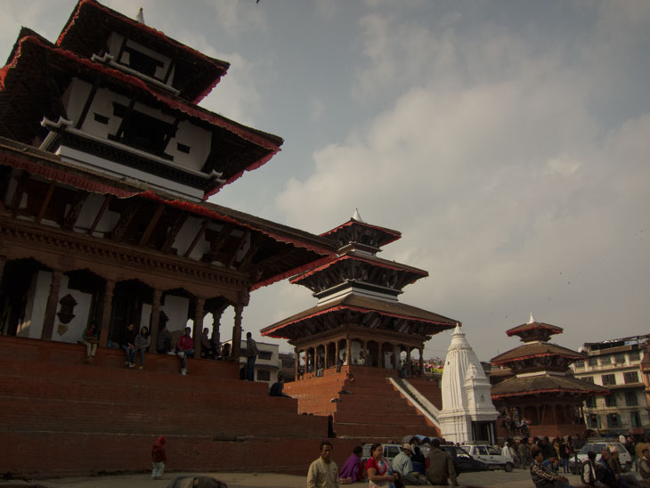
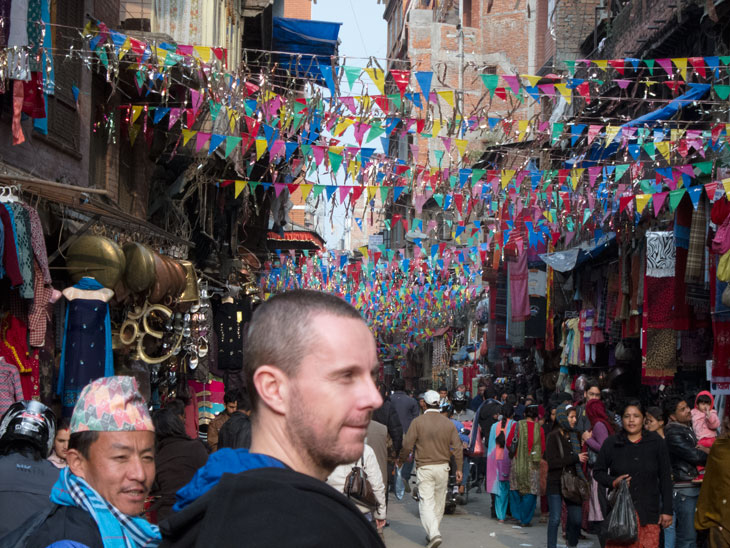
Went to Roadhouse Cafe for pizza. At this point, we had to start to think about what to do if we couldn’t get a flight out to Lukla at all. Our alternative option was to head out to Annapurna Basecamp instead. Annapurna I is the world’s 10th highest mountain, and one of the 14 whose peak reach beyond 8000m - one of the legendary 8000’ers. I was kinda reluctant to consider this possibility as I rather selfishly wanted the kudos of reaching Everest Basecamp (who the hell’s heard of Annapurna …)
Wednesday 16th November
Still no flights. We had to make some definite decisions - we were fast running out of time to make our trek, and if we didn’t go for Annapurna soon, we wouldn’t be going on any trek at all. With this in mind, we’d decided to wait till Friday, with the knowledge that if we did make it out there, there’d be less ‘rest’ days for us to acclimatise to the increasing altitude.
By this point, we stopped even bothering to pack our bags in the morning or going to the airport to wait for a flight.
Hung around Boudha and Thamel. Dropped off souvenirs back in lockers at original Hotel Tibet. Had dinner at the legendary Rum Doodle restaurant.
Thursday 17th November
Still nothing. I was resigned to going to Annapurna. Hung around Boudha where there was a little festival going on.
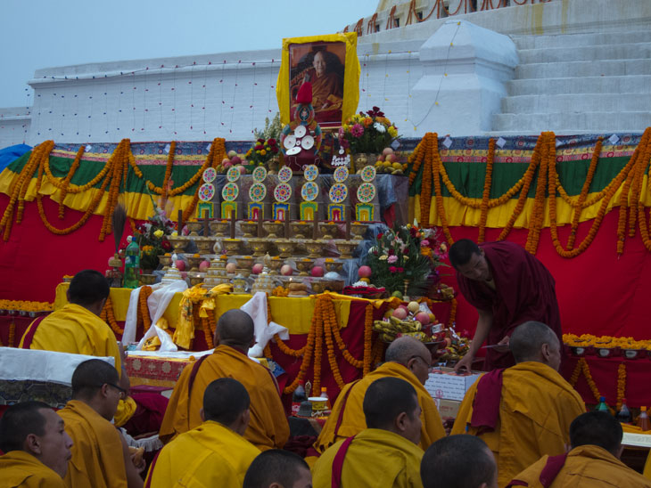
Upon returning to the hotel, we were informed by Hari, via reception that we were to pack our bags tonight, to be ready to leave for the airport at 7 in the morning. There was hope for our trek yet …